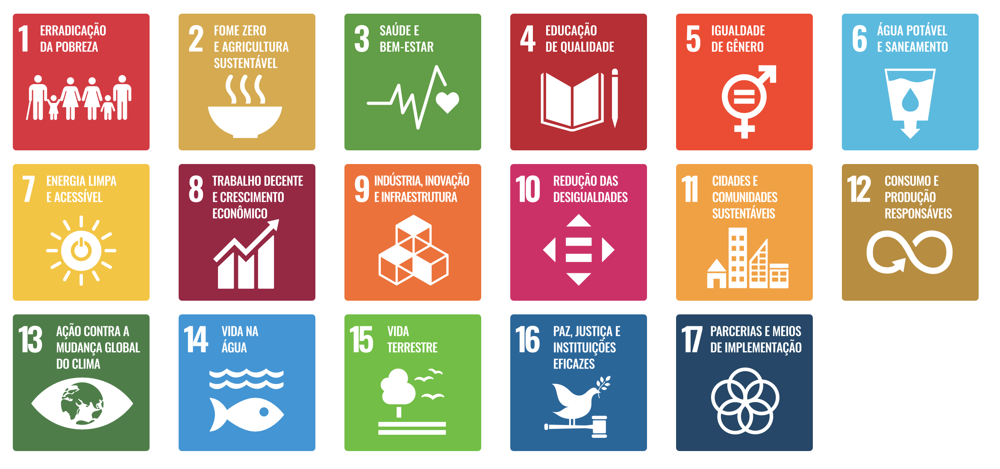

Kay McNulty - Achei UnB
Quem Foi Kay McNulty?
Kathleen “Kay” McNulty, pioneira da ciência da computação, foi uma das seis programadoras originais do ENIAC, o primeiro computador digital eletrônico de uso geral. Nascida na Irlanda e criada nos EUA, sua habilidade em matemática a levou a ser recrutada pelo Exército dos EUA como “computadora humana” durante a Segunda Guerra Mundial, calculando trajetórias balísticas de artilharia. Após a conclusão do ENIAC, ela e suas colegas operaram a máquina. Sem linguagens de programação, compiladores ou manuais, Kay configurou o hardware analisando diagramas elétricos, roteando dados e conectando cabos e interruptores.
McNulty e suas colegas foram fundamentais para a engenharia de software, inventando a programação de computadores. Desenvolveram métodos para traduzir equações matemáticas em passos lógicos para máquinas. Apesar de sua importância, as “Garotas do ENIAC” foram invisibilizadas por décadas, confundidas com modelos, enquanto o crédito ia para os engenheiros do hardware. Hoje, o legado de Kay McNulty é celebrado como prova do papel crucial das mulheres na criação da programação.
Kay McNulty, Fonte: EPIC: The Irish Imigration Museum
Achei UnB
O AcheiUnB é um projeto desenvolvido na disciplina de Métodos de Desenvolvimento de Software pelos estudantes da Universidade de Brasília da Faculdade de Ciências e Tecnologias em Engenharia. Seu objetivo é auxiliar na busca e recuperação de objetos perdidos.
Na plataforma, os alunos podem registrar itens encontrados ou perdidos com o intuito de facilitar o contato entre quem perdeu e quem achou determinado item. A principal vantagem do AcheiUnB é a capacidade de reduzir a dependência de grupos de mensagens, criando um sistema mais organizado e acessível para relatar os itens achados ou perdidos.
Características Principais
- Software Livre: O código do AcheiUnB está disponibilizado no GitHub, permitindo sua análise e contribuições;
- Facilitador e intermediador para o reporte e devolução de objetos perdidos e achados: O AcheiUnB, por ser uma plataforma dedicada ao reporte e devolução de achados e perdidos, evita com que plataformas externas, como o WhatsApp - em grupos de conversa da faculdade -; tenham que reportar os objetos achados e perdidos.
Objetivos de Desenvolvimento Sustentável (ODS)
Propostos pela Organização das Nações Unidas para atingir a Agenda 2030, os 17 objetivos de desenvolvimento sustentável buscam um melhor desenvolvimento das sociedades dos países que contribuem para as Nações Unidas. Entre os objetivos, estão a erradicação da pobreza, fome zero e agricultura sustentável, saúde e bem-estar, entre outros.

Objetivos de desenvolvimento sustentável propostos pela ONU, Fonte: ONU BrasilO AcheiUnB contempla os seguintes objetivos propostos pela ONU:
ODS 9 - Indústria Inovação e Infraestrutura
O Achei UnB representa uma inovação tecnológica dos estudantes projetada para resolver um problema de logística e comunicação. A plataforma atua como um facilitador e intermediador para a entrega e registro de objetos perdidos, os quais costumam ser anunciados em grupos de WhatsApp, Telegram e posts no Instagram.
ODS 12 - Consumo e Produção Responsáveis
O AcheiUnB, ao ser uma plataforma eficaz para a recuperação de itens perdidos, evita com que os estudantes precisem comprar novos produtos para substituir os perdidos. Dessa forma, o projeto, ajuda a prolongar a vida útil dos materiais e minimizando o consumo desnecessário de novos recursos
ODS 16 - Paz, Justiça e Instituições Eficazes
O AcheiUnB atua como uma ferramenta que busca incentivar o comportamento ético e a empatia dos alunos da universidade. Ela facilita ação de que deseja ser honesto e devolver um objeto ao seu verdadeiro dono. Como consequência, a plataforma, promove uma cultura de confiança e cooperação entre os estudantes do campis da universidade.
Equipe de Qualidade de Software - KAY McNULTY
A equipe de qualidade de software é composta por estudantes dedicados da Faculdade de Ciências e Tecnologias em Engenharia da Universidade de Brasília, trabalhando conjuntamente no projeto de avaliação de qualidade do AcheiUnB.
Membros da Equipe
| Foto | Membro | GitHub |
|---|---|---|
 |
Júlia Massuda | @juliamassuda |
 |
Luiz Faria | @luizfaria1989 |
 |
Tiago Antunes | @TiagoBalieiro |
| Samuel | TBD | |
 |
João Pedro Rodrigues Gomes da Silva | @JpRodrigues2 |
 |
Marjorie | @Marjoriemitzi |
| Versão | Descrição | Data | Responsável |
|---|---|---|---|
0.1 |
Criação da página e início da documentação. | 08/05/2026 | Luiz |
0.2 |
Adiciona objetivos de desenvolvimento sustentável e informações do AcheiUnB. | 12/05/2026 | Luiz |
0.3 |
Integração da seção de Equipe na página Início e reorganização das abas de navegação. | 12/05/2026 | Júlia |
0.4 |
Integração da seção de Equipe na página Início. | 12/05/2026 | Júlia |
0.5 |
Adição de João Pedro Rodrigues Gomes da Silva como membro da equipe. | 13/05/2026 | João Pedro |